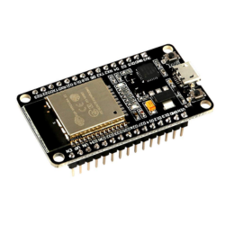
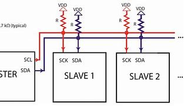
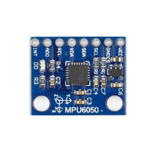
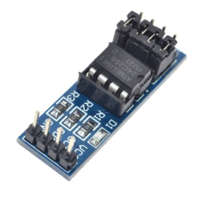

Selecione o módulo para teste
Esp32
A Placa ESP32 DevKitC é uma placa microcontroladora que embarca o módulo wifi e Bluetooth. Entre as principais funções da placa, vale destacar a conectividade, possibilitando a criação de diversos projetos IoT realizando da troca de informações a distância e com baixo consumo de energia.
 Esp32Protocolo I2C
I2C é um protocolo de comunicação serial que requer apenas duas linhas de sinal. Este protocolo foi criado com o propósito de padronizar (em outras palavras, facilitar) a comunicação entre diferentes dispositivos.
 Introdução ao protocolo I2CSensor de Cor
O módulo Sensor de Cor RGB é capaz de identificar cores com precisão, seu circuito é composto por fotodiodos responsáveis por absorver a luminosidade, classificar a cor e transimitir via I2C, produzindo então um espectro de luz de cor correspondente.
 Sensor de
cor
Sensor de
cor
Acelerômetro e Giroscópio - MPU6050
O Acelerômetro e Giroscópio 3 Eixos 6 DOF - MPU6050 é um módulo que contém em uma única placa um acelerômetro e um giroscópio tipo MEMS. São 6 graus de liberdade, 3 eixos para o giroscópio e 3 eixos para o acelerômetro.
 Módulo AcelerômetroMemória EEPROM - AT24C256
EEPROM é um tipo de memória não-volátil usada em computadores e outros dispositvos eletrônicos para armazenar pequenas quantidades de dados que precisam ser salvos.
 Modulo EEPROMMódulo em desevolvimento
Teste do módulo em desenvolvimento... Aguarde novos testes de módulos serem desenvolvidos. Em breve adicionaremos novos módulos e tutoriais